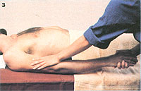

There's a definite healing power in your hands, as you'll discover when you practice . . .
All animals - including the human species - tend to instinctively grab or rub a hurt in order to ease the pain . . . and that simple urge to seek comfort in touch is the origin of massage. The word itself has been borrowed from French and can be traced back to the Arabic massa ("to touch or press"). In fact, the systematic manipulation of the soft tissues of the body has been practiced in many lands since ancient times, but - unfortunately - modern "massage parlors" have sometimes created a less than respectable reputation for this venerable art.
Thanks to today's rebirth of interest in wholistic health and natural healing techniques, however, massage has once again taken its place as a legitimate - and very effective - means of providing relaxation, body tone, and even "drugless therapy" for a number of minor ailments. When the simple techniques of massage are performed with knowledge, skill, and care, they can ease tension (which the body often "expresses" in terms of tight muscles or aching joints) . . . improve circulation . . . and promote deep relaxation, which contributes to both good physical and good emotional health.
Massage can also serve as a powerful form of nonverbal communication. During a massage session - whether it's conducted at home or in a professional setting - a healing transfer of energy is said to take place between therapist and patient . . an exchange that can ultimately "recharge" the body and promote a general feeling of well-being.
INTERNATIONAL ORIGINS
Although crude massage can be seen as an automatic reaction to pain, the practice was probably first raised to the level of an art by the Chinese, who recognized that a deep, rhythmic stroking of the skin could help balance the flow of chi (their word for essential life energy) through the body's meridians (or energy channels). Somewhat later, Greek and Roman physicians used massage as a form of rejuvenative therapy . . . and similar techniques were developed by Hindus, Persians, and South Pacific islanders (who referred to their version of the art as lomi-lomi ).
The use of massage fell into disfavor during the Middle Ages, but this healthful "laying on of hands" was revived - late in the eighteenth century - as a respected medical treatment . . . largely through the efforts of Per Henrik Ling, a Swedish doctor who developed a fitness system that combined regular massage with therapeutic exercise. Swedish massage, as Ling's regimen came to be called, is now the most widely practiced form of "bodywork" . . . and is taught at most schools of massage in the Western world.
YOUR MUSCLES WILL LOVE IT!
The appeal of this healing art - which has maintained its popularity in so many different cultures and cut such a wide swath through history - stems, of course, from the effects it produces. Besides the generally warming, soothing feeling that results from a gentle rubdown, a thorough massage can promote well-being by positively influencing the body's physiological functions. As the therapist's hands move over a patient's skin, they excite sensory receptors in the epidermis, which then send reflex stimuli through the nervous system . . . exerting a profoundly healthful effect on the deeper tissues, muscles, and organs.
The kneading and manipulation of massage can also increase the circulation of blood (which, of course, carries oxygen and other nutrients to the internal organs) and lymph (which carries away the cells' wastes). As a matter of fact, a full-hour session can "move" - or stimulate - the body's circulation as well as does a seven-mile run! Of course, massage doesn't provide the same aerobic benefits that active exercise offers . . . but it does help disperse the cramp-producing waste deposits of lactic acids that accumulate in the muscles after physical exertion. Therefore, it serves as excellent therapy before or after any sort of hard workout . . . and many athletes, dancers, and actors rely on regular massage treatments to prevent painful muscles or joints.
Furthermore, although it can't actually increase a person's strength, massage therapy is very effective in loosening contracted, tight muscles and toning weak, flaccid ones. It can also improve muscle flexibility by stretching the hardened connective tissue that hampers free movement, and by relieving joint pain or swelling. Thanks to its stimulatory action, massage even increases gland secretions and excretions, which - in turn - enhance skin condition and speed up the body cells' metabolic rate.
Perhaps more important than massage's physical benefits, however, are its psychological and emotional effects. Because it can disperse tension anywhere in the body, the practice is one of the most effective (and inexpensive) antistress therapies available. As anybody who's ever experienced one knows, a well-executed massage is extremely soothing . . . yet - at the same time - quite invigorating and energizing. When chronic tension is released from deep within a person's muscles and tissues, he or she is bound to feel relaxed, "opened", and maybe even a bit lighter!
DIFFERENT STROKES
The effects produced by a good massage, then, are quite impressive ... and you might think a person would need years of intensive training to develop the skills necessary to bring them about. In fact, though, one needs to learn only a few basic strokes, or hand movements, to become an effective masseur or masseuse. The following strokes, all components of the system of Swedish massage, can be used to perform the "do-it-yourself" treatment featured in the accompanying photos.
Effleurage, the "gliding" stroke, requires that the hands slip lightly over the skin to establish contact and to begin stimulating the tactile nerves. Effleurage is the most popular opening movement in massage, and is typically used to apply oil to the body in long, smooth strokes.
Petrissage - which often follows effleurage - consists of a kneading motion of the fingers that's said to "milk" the muscles of any accumulated toxins that may be causing pain or cramps.
Vibration is another method of removing tension blocks from muscular tissue. The stroke consists of pulling a small area of flesh up firmly between the fingers and then shaking, or vibrating, it to loosen it up.
Tapotement is the dramatic percussive movement most people envision when they think of classical Swedish massage. Beneficial to the chest, back, or legs, tapotement involves striking the body a series of rapidfire blows . . . with either the straight sides of the hands, the fingertips, or the cupped palms. This extremely stimulating stroke improves circulation in the area being treated and - surprisingly enough - relieves fatigue.
Friction is a general name for any one of several deep pressure maneuvers. Most commonly, they're applied in concentric circles - with the thumbs, the fingertips, the heel of the hand, or the elbow - around and over a tender spot. This kind of stroke can break up waste deposits in the tissues and is often an excellent form of treatment for swellings, painful or grating joints, and aching muscles. However, it should always be followed by gentle effleurage of the painful area.
Once you're familiar with a few basic Swedish strokes, you won't have to concern yourself with any hard and fast rules as to how, when, and where to give a massage. There are, though, a few general points to keep in mind, which can be adapted to your particular situation. Remember primarily that fancy equipment, gadgets, and a large repertoire of strokes aren't necessary. You really need only the desire to use your hands to make someone feel better. If you have that, the results of your massages will, in most cases, astonish both you and your subjects.
BEFORE YOU BEGIN
Surprisingly, preparing the setting for a massage is just about as important as the actual bodywork session itself. First of all, you should try to keep visual and auditory distractions to a minimum by working in a private, orderly room. (You might even want to set aside a special massaging area in your home, if the space is available.) Of course, an outdoor massage can be a wonderful experience, but it may be even harder to avoid disturbance there.
When working indoors, you'll likely find that low, indirect lighting is preferable to harsh fluorescence . . . and candles are ideal for providing a soft, hypnotic glow. Try to make sure that there'll be a constant supply of fresh air circulating, too . . . and light some incense, if you like. Music offers another atmospheric plus, but do be sure to choose only slow, instrumental pieces that will soothe the subject.
Many people feel that nothing could be more relaxing than being massaged while on a bed . . . but a mattress is actually one of the worst surfaces to use. Instead, look for a firm foundation that won't give under the pressure being applied to the subject's body. If you don't have a standard massage table (which can be prohibitively expensive), you might simply put a foam pad on a dining room or kitchen table that's level with your hip when you're standing. If you don't have a table that's the correct height, you can always spread a wide mat, blanket, or sleeping bag on the floor . . . in which case you'll have to kneel or squat beside the subject.
Place a clean sheet over the padding to protect it from spilled oil, and another sheet or towel on top of the person being massaged. (Since massage is best performed on bare skin, most people like to use some sort of drape to cover the parts of the body that aren't being worked on.) Be sure, too, that your subject is kept warm throughout the session . . . a person with oiled skin is easily chilled.
The use of oil in massage has been the subject of a good many debates . . . and although it is possible to give a good treatment without using the slippery substance, the majority of today's professionals believe that it helps to insulate and lubricate the body, allowing for ease of movement and smooth strokes. Baby oil, which is many folks' favorite, is not a good choice, because it tends to leach certain minerals out of the skin. Most vegetable oils - especially peanut, sesame, and olive - are ideal for use in massage . . . and can be mixed with essential fragrances (try almond, sandalwood, or a floral extract) to create pleasantly scented massage mediums.
Whichever oil you use, do be sure to warm it in your hands before applying it to the skin . . . and put on only enough to help your palms move easily over one specific area at a time (there's no point in leaving "oil slicks" all over a person's body). For obvious reasons, the individual receiving the massage should remove all jewelry, watches, hair ornaments, glasses, and contact lenses before a session begins . . . and the masseur/masseuse should wear no rings or bracelets, and must make sure his or her fingernails are trimmed neatly.
PROFESSIONALLY SPEAKING
After experiencing massage yourself, you may decide that it makes you feel so good you'd like to incorporate it into your regular health care program . . . and in that case you'll probably want to locate a professional therapist. Most metropolitan and suburban areas offer the services of at least a few licensed establishments, so you may be able to take your pick. But how do you go about making that selection . . . and what should you expect from a good masseur or masseuse? Well, Marilyn Baer Myers - registered massage therapist, natural health care practitioner, and director of the Center for Well-Being in St. Petersburg, Florida - offers the following general guidelines:
[1] Look for advertisements or business cards of massage therapists on the bulletin boards in health food stores, co-ops, and exercise studios, or ask your family doctor or chiropractor for recommendations.
[2] Of course, you might simply consult the Yellow Pages of your telephone directory ... and this method isn't as precarious as it may sound. First, call any establishments or individuals you're interested in. Inquire what services they offer (massage, hydrotherapy, acupuncture, nutritional counseling, etc.) and ask for explanations of anything you're not familiar with. If a therapist is open, friendly, and helpful on the phone - Marilyn says - you'll probably next want to visit his or her establishment.
[3] On your initial visit, make sure the environment will enhance your treatments. Is the workroom private . . . or are other activities (such as encounter groups or exercise classes) going on in the same general area? You should try to find a therapist who operates in a clean, peaceful location that's orderly and offers no distractions.
[4] Obviously, you'll want to choose a masseur or masseuse who's been licensed by the proper state examining board. Someone who's earned the R.M.T. (registered massage therapist) designation is likely to be a reputable, well-trained individual.
[5] Finally, try to find a therapist who has a variety of "tools" at his or her disposal . . . not complicated machinery or strange-looking gadgets, but - rather - a wide range of skills that will allow him or her to work on you gently or deeply, rapidly or slowly, according to the needs of each situation. This flexibility in technique, of course, can't really be determined until you literally put yourself in the hands of a particular practitioner . . . so it's a good idea to sign up for an introductory massage or two before committing yourself to a long series of treatments.
Once you've found a good therapist, Marilyn advises, stick with that person. Regularity of treatment is very important in massage because the beneficial physiological effects are cumulative. The normal individual leading a fairly active life, she says, would definitely benefit from a weekly massage . . . but a schedule of monthly appointments would probably fit into most folks' budgets better. (You can expect to pay anywhere from $20 to $50 for a full-body session . . . which will last about one hour.)
FROM THE EXTREMITIES . . .
Once you're set up and the subject is ready to begin, it's beneficial to relax quietly together for a few minutes and bring your breathing into unison. This will help facilitate the tactile communication that is about to occur. (By the way, most experts agree that the less conversation there is during a massage, the better the treatment will be: Let your hands speak for you. Also, try to maintain at least some form of physical contact throughout the session. If you need to change sides or put some more oil on your hands, for instance, you might rest an elbow or forearm on your subject's body while doing so.)
An excellent way to initiate the process of "bonding" between massager and massagee - and to start the session itself - is to cradle the subject's head in your hands for a minute or two while both of you try to exhale any body tension. Then begin to massage the scalp with slow, circular motions of your fingertips. Follow that with a general face massage - which should include the application of gentle pressure with the thumbs - across the forehead, down along the sinuses (on either side of the nose), up the jawline, and down the sides of the neck. (Avoid pressing on the eye sockets or the large muscle in the front of the throat, however.) If you want to refresh your subject's eyes, try applying petrissage for a few seconds in the indentation at the top of the spine on the back of the head.
After massaging the face and neck, go on to the hands. (Movement in Swedish massage proceeds toward the heart, so the work always progresses from the extremities to the center of the body.) Knead the fatty part of the thumb and then "work over" the palm with pressure from your thumbs. Give each finger a gentle tug to loosen the joints, and massage around each knuckle and along the sides of each finger. Finally, use the tips of your thumbs to carefully press between the tendons on the back of the hand and around each tiny bone in the wrist.
Next, move smoothly onto the forearm and begin with effleurage strokes in which your hands glide rapidly up to the shoulder and back down along the sides of the arm. Now, raise the forearm straight up and slowly rotate the elbow first in one direction, then the other way. (Don't allow your subject to "help" . . . his or her limbs should remain perfectly passive and limp during the massage.) Place the elbow back on the table, and "drain" the forearm . . . by gripping it in both your hands and sliding them - while squeezing slightly - from wrist to elbow in one unbroken motion. Repeat this "milking" stroke several times, then massage the muscles on the inside of the forearm with thumb circles.
With both forearms done, move on to apply the same series of treatments to the upper arms. (You'll need to pull each limb straight up from the shoulder and cradle the hand between your chin and your shoulder as you drain and apply petrissage to the biceps.)
The next stops in a full-body massage are the feet. Careful, thorough work in this area can influence the outcome of the rest of the massage, because the foot contains a reflex area for each part of the body which - when stimulated - -can have a dramatic effect on the corresponding organ or gland. (In fact, there's an entire science - called reflexology or zone therapy - which is devoted to the use of foot massage for overall healing.)
Begin by working over the sole of each foot thoroughly with your thumbs, then run a fingertip down the grooves between the tendons on the top of the foot. Trace around the ankle bone on both sides with a lightly pressing fingertip, too. Next, exercise the ankle by holding the foot in one hand and rotating it in a half-circle - first to the left, then to the right - with your other hand. Finally, you'll want to work on the toes: Run a finger in the "valley" between each pair, and - holding the foot steady with one hand - grasp each toe in turn and give it a firm pull. [EDITOR'S NOTE: You can wait and massage the feet later, when you're working on the backs of the legs, if you prefer . . . but most therapists agree that it's more easily done when the subject is still lying on his or her back.]
Now, you're ready to move up over the ankle to the front of the leg. In this area, you'll need to use a lot of force, so be sure to stand with one foot planted slightly in front of the other . . . and lean into the strokes, using your weight - instead of your muscles - to apply pressure. Start off with a few rounds of effleurage to drain the appendage (just as you did the arm). These full-length strokes should extend from the ankle up to the hip . . . where your hands separate and come back down on either side of the leg. Trace your fingertip - with very light pressure - around the kneecap, and knead the flesh of the thigh with vigorous petrissage. Raise the calf and do a few knee manipulations similar to the elbow rotations you performed earlier . . . then finish each leg with a few more effleurage strokes.
. . . TO THE HEART . . .
Massage of the torso is most effective if the stomach muscles are relaxed by having the person draw up his or her knees while keeping the feet on the table (or floor) . . . but it can also be accomplished when the subject is lying flat. Position yourself behind the head and begin a series of effleurage strokes that move straight down from the collarbone to the abdomen and back up along the sides of the body. (If your patient is a woman, you can cover her breasts with a towel and work only on her lower chest and stomach.) Moving to one side of the table, use deep pressure of the fingertips to massage the upper chest in small circles . . . then work along either side of the collarbone, pressing the flesh between your thumb and forefinger. Finally, knead the sides of the torso with both hands . . . working from the waistline to the armpit.
Massaging the abdominal area is especially beneficial for people with digestive complaints, but it's guaranteed to feel good to just about everyone. Simply move your hands in a large clockwise circle between the ribs and the pelvic bone. Let your right hand follow the left, then cross under it, to maintain a continuously moving circle. Repeat the motion five or six times, and you'll stimulate and tone the entire digestive tract .
. . . AND THE BACK
Now, help your subject roll over, and you'll be ready to massage the back. Start with long, slow effleurage strokes from shoulders to waist. Then go on to apply pressure to all areas of the back, using light petrissage first, followed by heavier friction. Press the thumbs alongside the spine all the way up . . . being careful to stay beside - and not on top of - the vertebrae. (If your subject wants even more pressure, you can use your elbow to trace a line along either side of the spine.) Then cover the whole back area, making tiny circles with your fingertips or the heel of your hand.
Next, stand beside the table and reach across your subject's body to perform a series of "pulling" strokes, squeezing the flesh in an upward motion with alternating hands. Start at the waist and move up to the armpit, then work along the other side of the torso. A hearty round of tapotement (which - when performed on the back - is usually done with the sides of the hands) will stimulate the spine and relieve various back pains.
A lot of tension collects in the neck and upper back, so be sure to give this area special attention. Slowly knead the muscles that extend from the neck to the shoulders, using vigorous petrissage and/or vibration.
To massage the shoulder blades themselves, raise one of your patient's hands, bend the arm at the elbow, and place the hand - palm up - in the middle of his or her back. Slip one of your hands underneath that shoulder, and go to work with the thumb of the other in the half-circle groove underneath the raised scapula bone. Repeat this on the other side . . . and your subject should feel the stress loosening in his or her shoulders!
Most folks like to end the work on the back by giving it a few final effleurage strokes, then "holding" the area in one of two ways: Either place your hands parallel to each other on the back and about a foot apart . . . or fit one hand over the tailbone (coccyx) and lean forward to place the other one on the back of the neck. Maintain the soothing hold for a few moments before moving on.
The backs of the legs are the last areas to receive attention, but certainly not the least important. Every day, our legs and feet are subjected to jarring shocks, so the physiological benefits of massage are especially welcome - and can be felt almost immediately - in these parts of the body.
After using effleurage to stimulate and drain the backs of the legs, you can knead those large, overworked muscles with lots of pressure from your thumbs and fingertips. Massage the fleshy thighs with horizontal petrissage, and use thumb pressure in a vertical line up the length of each calf. Tapotement - using the sides of the hands or the fingertips for percussion - feels especially nice on the backs of the calves. Finish by lifting each calf and pushing it gently as far as it will go toward the buttocks.
There are many appropriate ways to conclude a massage, but it's important - however you do it - not to break the contact abruptly. Remember that you've been involved in an intimate tactile "conversation" with your subject for quite a while, and you don't want to jar him or her back to reality by suddenly letting go. Some massage therapists like to use one long effleurage stroke up the legs, across the back, and off the shoulders to end a session . . . while others simply hold part of the body briefly before removing their hands. One way to "release" your subject gently is to hold onto his or her heels for a minute or so . . . then - very slowly and with feather-light strokes - slide your hands down over the soles and off the ends of the toes.
The simplified routine described here is by no means a thorough full-body massage, but it should serve as an adequate introduction to the techniques. Practice the basic strokes, expand your technical skill by trying out "inventions" of your own, ask your patients for feedback . . . and you'll probably soon find that massage is a wonderfully creative - as well as therapeutic - art. Offering health benefits to both the therapist and the subject, massage has been soothing and energizing people for centuries. Once you investigate this ancient tradition, you may be surprised at the healing power hidden in your own fingertips!
EDITOR'S NOTE: If you'd like to study massage - and perhaps attend one of the several licensed massage schools on this continent - you can write to any of the following:
Florida Institute of Natural Health and School of Massage
Dept. TMEN
1115 North Main Street
Gainesville, Florida 32601
J. Victor Scherer's Academy of Natural Healing
Dept. TMEN
514 Oñate Place
Santa Fe, New Mexico 87501
Atlanta School of Massage
A School of the Healing Arts
Dept. TMEN
141 West Wieuca Road
Atlanta, Georgia 30342
Rocky Mountain Healing Arts Institute
The Boulder School of Massage Therapy
Dept. TMEN
P.O. Box 4573
Boulder, Colorado 80306
The number of really good books on massage is limited, but one that's definitely worth your while is The Massage Book by George Downing (Random House/Bookworks, $6.95 in paperback). Look for it at your bookstore or library.
|
[1] Cradle the head to initiate ""bonding"". |
[2] Apply pressure to the indentation at the back of the neck to refresh the eyes. |
 [3] Effleuraging the arm. |
|
[4] Working the toes. |
[5] Massaging the torso |
[6] An abdominal massage will stimulate and tone the digestive tract. |
|
[7] Apply friction to each side of the spine |
[8] Work the shoulder blades with your thumb |
[9] Tapotement on the back of the calves. |
|
[10] ""Release"" your subject by gently holding onto his or her heels. |
|
|